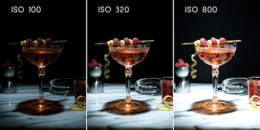
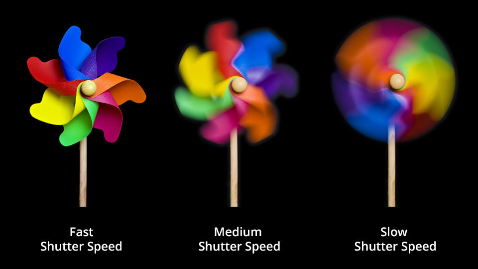
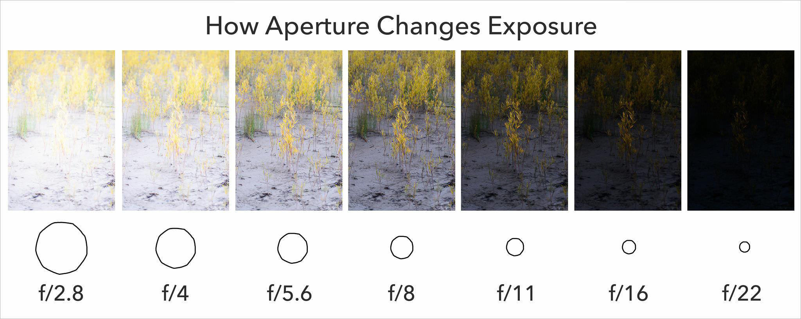

My name is Roberto and today i will be telling you about one of my favorite hobbies which is Photography and how i came to get into it. Back when i was young, my dad would always have a disposible camera with him, he enjoyed taking pictures, at family gatherings, trips, birthdays he was always the one jumping all over the place making sure to capture everyone and and every moment, he could never wait to get them developed, we had a whole bunch of photo albums at home and whenever we had company they would all enjoy going through them and reminesce about the good times we had. The photo albums would bring everyone together and i really enjoyed this.
“Photography is a way of feeling, of touching, of loving. What you have caught on film is captured forever… It remembers little things, long after you have forgotten everything."
-Aaron Siskind.
I bought my first camera back in 2012 when i was 21 years old, it was a Canon EOS Rebel XS which debuted back in 2010, it was a refurbished model but it didn't matter, i was just very excited to dive right into it and start taking pictures. It wasn't as easy as i though it would be though, it took me a while to really learn how to fully work the camera, see they're a bit like computers, they have many different functions, and quiet a few buttons which can be a a bit complicated and intimitdating at times but nothing one cannot be taught. I decided to do a bit of reading on the matter and quicky learned that in order to be able to take great pictures, you dont just point and shoot, you must first learn and understand the 4 camera basic controls and these are:
ISO is simply a camera setting that will brighten or darken a photo. As you increase your ISO number, your photos will grow progressively brighter. For that reason, ISO can help you capture images in darker environments, however, the higher the ISO, the more the camera will pick up other atmospheric stuff resulting in “noise” or a graininess in the image
A shutter is like a door. The door opens and closes completely. When it's open, light can strike the film or the digital sensor. When it's closed, light cannot reach it. So a shutter spends most of its time closed. A shutters open time is measured in seconds, it can be open for 1 second, that second is called we call Shutter Speed. On most cameras you can choose a shutter speed: a fast speed would be a fraction of a second, a slow speed is longer than a fraction of a second . The shutter speed is the length of time that the camera is recording a picture. A fast shutter speed makes a brighter picture, freezing motion, but if something moves while the image was being recorded, it will cause a blur. On the other hand, a slow shutter speed will capture motion as you can see in the example below. In order to create a long exposure picture you would set the shutter speed to a slow speed meaning a couple of seconds or maybe minutes
The best way to understand Aperture is to think of it as the pupil of an eye; the wider it gets, the more light it lets in. Together, Aperture, Shutter Speed, and ISO produce an exposure. The diameter of the aperture size changes by widening or narrowing down, allowing more or less light onto the sensor. This depends on the situation and the scene being photographed. Aperture size is measured using something called the F-STOP scale. On your digital camera, you’ll see "f/" followed by a number. This f-number denotes how wide the aperture is and how the size of the opening aperture affects the exposure and depth of field of the final image. The scale is as follows: f/1.4, f/2, f/2.8, f/4, f/5.6, f/8, f/11, f/16, f/22. What may seem confusing is that the lower the number, the wider the aperture. This means that your camera aperture settings will be wide open at a smaller f-stop number, like f/1.4 (maximum aperture) and at higher numbers like f/16 or f/22 you'll get a more narrow aperture.
White balance is the process by which you balance the temperature of the colors in the images you take. In other words, white balance corrects color casts that result from certain lighting situations. Mostly all modern digital cameras have several white balance preset modes that you can use to correct for color irregularities. Here are some of the preset modes, Auto White Balance or AWB, Daylight/Sunny, Shade, Flash and Tungsten, just to name a few. These you choose according to where and what you're photographing. I would suggest starting of with Auto White Balance (AWB) and letting the camera best guess as to what the colors should look like, although not too reliable as light situations get a bit more difficult, it will let you have an idea how it all works.

Once you have understood these 4 basics and how to properly work with them you should have a general idea and understanding on how to take great pictures. There are so many different types of cameras out there, many offering their own unique style but i would say that two of my favorite types would be the "SONY a7R lll" which is a Mirrorless Camera, a bit expensive but it's an amazing camera, professional standards. My other personal favorite is the Canon EOS T6i." This one is a DSLR camera which stands for Digital Single Lens Reflex. The difference between the two is that the DSLRs mirror inside the camera body reflects the light coming in through the lens up to a prism, and into the viewfinder for you to preview your shot. When you press the shutter button, the mirror flips up, a shutter opens and the light falls onto the image sensor, which captures the final image, on a Mirrorless camera light passes through the lens and right onto the image sensor, which captures a preview of the image to display on the rear screen. Another difference between the two is that DSLRs are a bit heavier and larger in size as they need to fit in a mirror and a prism, Mirrorless cameras on the other hand are much lighter and smaller insize due to the simplicity of their contructrion, this makes the Mirroless camera easier to carry and store. All in all i would suggest starting off with DSLR type camera, aside from the bulkines and the fact that it is a bit heavy, price wise is not too expensive. you should be able to find really good ones for around $500-$900, you can even find older models for or around $400. Of course they might not have newer features that the newer models have but it's a start, and if you plan on making a hobby out of it like i did, i would say go for a newer model, it's a great investment. I take my camera with me on every trip i go, or even on a day off i'll go out for a walk just try to photograph the city, it's a good pasttime and i enjoy it as much as my dad did.

{kind=link}
{kind=link}
{kind=link}
{kind=link}